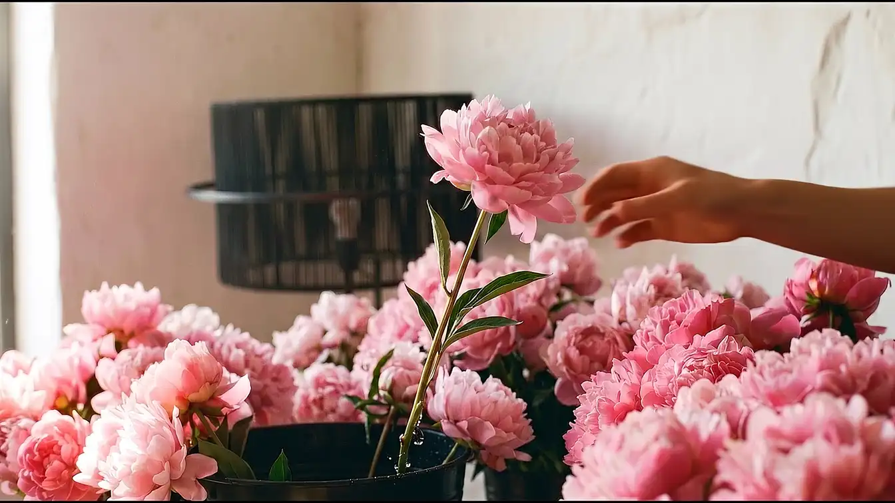
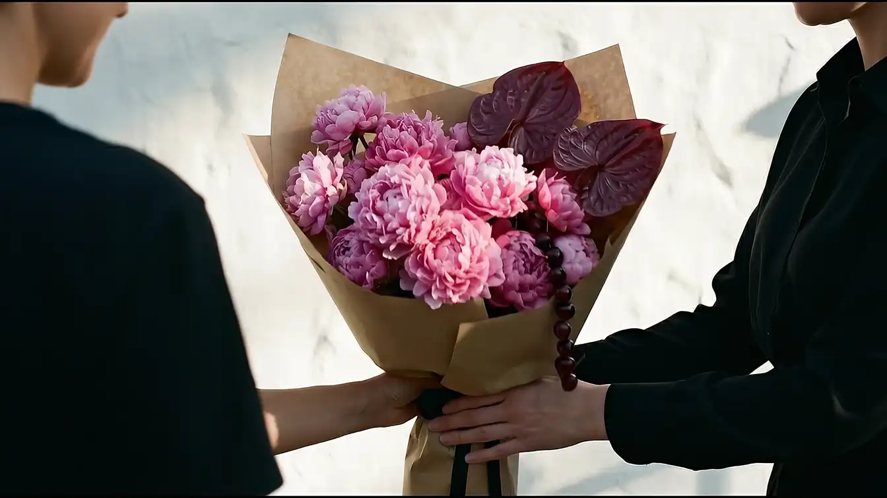

Despre pagina asta
Filmul de mai sus nu rulează singur — înaintează cadru cu cadru, în ritmul degetului tău: bujorii ridicați din apă, drumul prin picătură, tunelul panglicii, buchetul întins spre tine. Florăria Iris leagă buchete în București din 1970.
Cum s-a realizat
Nu ne apucăm direct de filmat. Întâi scriem povestea în 3-5 „acte" (ca la teatru), fiecare rezumat într-o singură propoziție. Partea cea mai importantă este să ne imaginăm cum trecem de la o scenă la alta (ex: camera intră printr-o perdea și iese în altă cameră) — aceasta este „puntea". Apoi, folosind Inteligența Artificială, transformăm fotografiile reale primite de la client în fotografii cinematografice perfecte. Acestea sunt „ancorele": punctul de pornire și de oprire pentru mișcarea video. Dacă o poză de bază arată dubios, tot video-ul va arăta dubios, deci aici corectăm la sânge.
Aici „dăm viață" pozelor statice. Folosim un alt sistem de Inteligență Artificială (Veo), căruia îi dăm două poze perfecte — cea de început și cea de final — și îi spunem: „Lipește-le printr-o mișcare fluidă de cameră". Facem asta pentru fiecare scenă și pentru fiecare „punte" de tranziție. Rezultatul: mai multe clipuri video scurte și brute, cu viteză constantă. Dacă vreunul tremură sau pare artificial, e aruncat și refăcut.
Luăm bucățile brute de filmare și le tăiem la milisecundă, astfel încât să se lege perfect una de alta. Tot aici umblăm la „vopsea" (corecția de culoare): sfârșitul clipului A și începutul clipului B trebuie să aibă exact aceeași nuanță și lumină, ca ochiul vizitatorului să nu-și dea seama niciodată că sunt două clipuri lipite, ci să pară un singur cadru continuu. La final, le mărunțim într-un format foarte mic, optimizat, ca să nu blocheze internetul.
Înainte să asamblăm întregul film, luăm doar cea mai spectaculoasă secvență (punctul culminant) și o transformăm într-un test interactiv funcțional. Îl trimitem clientului: „Dă scroll pe asta. Așa se va simți tot filmul. Îți place?". Regula de aur: lucrul se oprește aici. Nu se construiește nimic mai departe până când clientul nu zice „DA!".
Clientul a zis da, deci acum toate clipurile montate se leagă de rotița de la mouse (scroll). Noi dictăm regulile: cât de repede se mișcă acțiunea raportat la cât dă omul din deget, la ce cadru exact începe o anumită mișcare — și ne asigurăm că totul alunecă fin, fără sacadări, chiar și pe un telefon mobil cu internet mai slab.
Acum că totul funcționează, mai trecem cu pieptănul des prin el: defecte invizibile la prima vedere, mici greșeli de încărcare a imaginilor — și notăm absolut orice regulă nouă învățată în proiect, ca s-o refolosim data viitoare. Fiecare ședință de lucru lasă „un bilet" foarte clar pentru următoarea, astfel încât nimic din ce s-a discutat să nu se piardă pe drum.
Filmul final este inserat în pagina web propriu-zisă, printre textele și designul general al site-ului. Se pun la punct detaliile de finețe (un scroll general mai plăcut, mai lent) și totul se împachetează și se „urcă" pe internet. Facem ultimele teste ca să pice bine pe orice ecran și abia apoi trimitem clientului link-ul final, public, pe care îl poate arăta lumii.